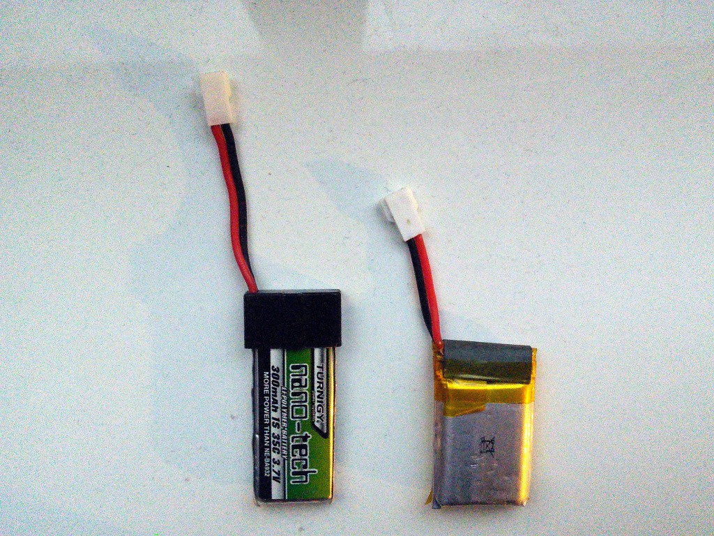

More Blue Smoke¶
Published on 2014-12-23 in Pico-Kubik quadruped robot.
Today is a sad day for this project.
I decided to use a new battery that I bought specially for this robot, instead of using battery packs from my Walkera RC helicopter. Taught with previous mistakes, I have a socket for the battery that only lets you insert the plug the correct way. Being assured by this, I didn’t really look carefully when I connected the battery… Alerted by the hissing and smoke from the power switch, I immediately disconnected it but… too late.\
What happened? Look at this:
See? Battery packs from different manufacturers have the plugs in reverse… I suppose that increases their sales.
Unfortunately, this time not only the power switch is fried – also the VoCore. The Arduino Pro Mini and the camera module seem to be fine, though.